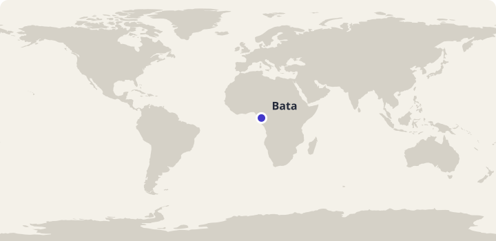
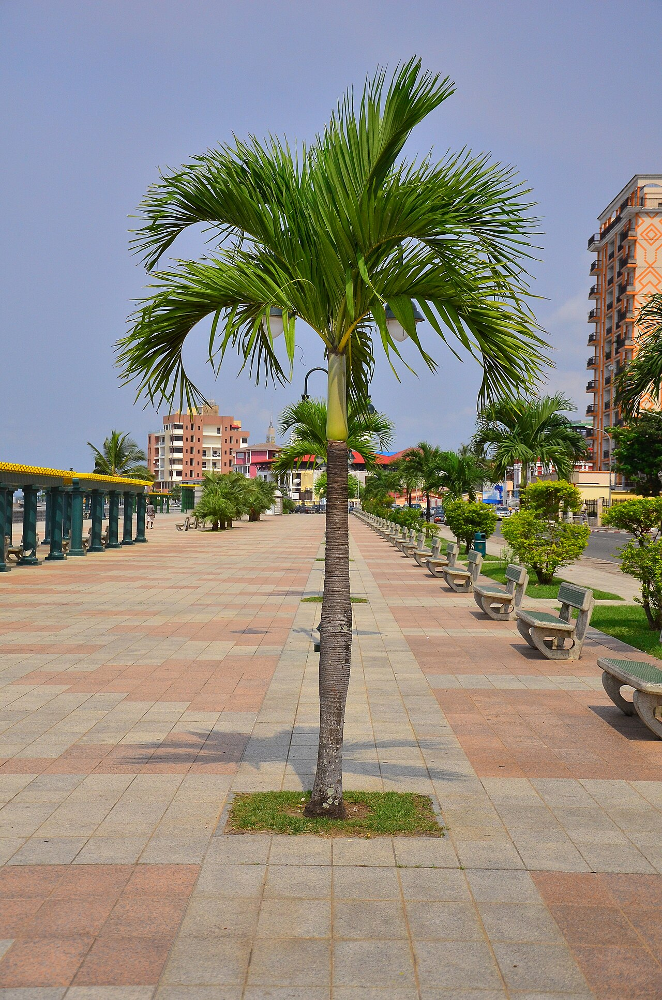
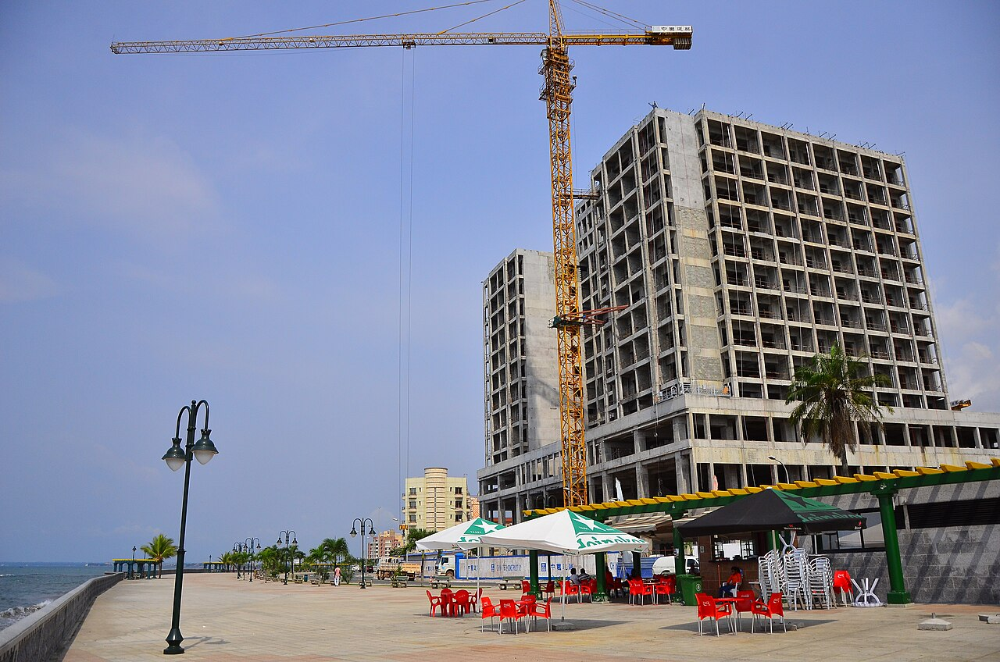

Arbeidsutkast · til lærervurdering
45 minutter · les, oversett og sammenlign
Ekvatorial-Guinea: Un día en Bata
En dag med Inés: tegning, kystliv og flere språk.
Bli med Inés gjennom en dag i Bata. Les høyt og oversett muntlig i par. Svar på spørsmålene, snakk om hverdagslivet og øv på ordene fra teksten. Inés og familien er fiktive; stedene og kulturinnslagene bygger på kildene nedenfor.

Bata i Ekvatorial-Guinea. Kartgrunnlag: Natural Earth. Markøren viser byens omtrentlige plassering.
Les og oversett i par
- Les teksten høyt sammen. Bytt på å lese ett avsnitt hver.
- Oversett ett avsnitt om gangen muntlig til norsk. Pek eller trykk på understrekede ord når dere trenger hjelp.
- Hjelp hverandre med ord og setninger dere er usikre på.
Pek eller trykk på understrekede ord i teksten for å se norsk oversettelse. Numrene i bildene viser bildeord.
Afrika · Atlanterhavskysten
Un día en Bata

Bildet kunne ikke lastes. Du kan fortsatt lese teksten og bruke ordoppslagene.
Om bildet
Bata, 2015-02 -i---i- (16325683430).jpgDato: 2015Nedskalert av Commons; ikke beskåret. Nummererte ordpunkter lagt over bildet.
- la palmera palmen
- el banco benken
- el paseo promenaden
Inés, y en Bata, en de Guinea Ecuatorial. Mi ciudad está . Hoy . con a comprar . y . para la fruta.
En casa y también usamos palabras en . En Guinea Ecuatorial , y el español es . estudio en español. Me gusta las palabras que usa , porque a veces con que .


, el Centro Cultural de España en Bata. actividades de , música y . Hoy participo en . La profesora observar y tres . Yo junto al mar y .
voy con al paseo. un sitio . Desde vemos el agua, unas y . Otras personas caminan o . el cuaderno y dibujo primero para . Después la barca y los árboles. pregunta qué colores necesito para .
un momento para beber agua. En la bolsa hay unos . mi dibujo a y él un detalle que puedo . No quiero hacer una foto exacta, mostrar lo que . Me gustan del agua y la forma de . Mañana dibujo otra parte de la ciudad.
a casa, mira el cuaderno. Le explico el taller y ella propone una historia sobre el mar. Mi hermano quiere otro día. los lápices, pero dejo el dibujo sobre la mesa. Hoy encuentro una manera de algo de mi ciudad: , y después contar una pequeña historia.
Faktakilder: Instituto Cervantes: Lenguas de Guinea Ecuatorial · AECID: Espacios culturales en Bata. Vis til teksten når du begrunner svarene.
Spørsmål til teksten
Velg ett svar på hvert spørsmål.
Utforsk kultur
Sammenlign og spør
- På hvilke måter ligner Inés sin dag på en dag på et sted du kjenner?
- Hvordan brukes språk og kunst til å dele historier i teksten?
- Hva lærer du om hvor spansk brukes i verden?
- Hvilket sted ville du tegnet for å vise en besøkende noe av nærmiljøet ditt?
Åpne spørsmål har flere rimelige svar. Lytt til partnerens begrunnelse.
Bruk språket i par
Velg et sted dere kjenner. Tegn tre enkle detaljer og beskriv dem for partneren med tre spanske setninger.
Prøv en utvidelse
Gi et kort råd til en som skal besøke Bata.
Ord du kan bruke videre
Øv på de ti ordene fra teksten. Prøv å huske svaret før du snur kortet.
Lær Ekvatorial-Guinea-gloseneValgfritt glosesett: Ekvatorial-Guinea: Un día en Bata. Kom tilbake og repeter ordene. I glosemodus vises det når ordene er klare for repetisjon.
Se de ti ordene
| Spansk | Norsk |
|---|---|
| el cuaderno | skrivebok |
| el lápiz | blyant |
| dibujar | å tegne |
| la barca | båt |
| la sombra | skygge |
| el cielo | himmel |
| la hoja | blad |
| escuchar | å lytte |
| la historia | historie |
| compartir | å dele |
Dekk den spanske kolonnen. Si ordet før du sjekker. Bytt deretter retning og øv på ordene du er usikker på.
| Spansk | Norsk |
|---|---|
| el cuaderno | skrivebok |
| el lápiz | blyant |
| dibujar | å tegne |
| la barca | båt |
| la sombra | skygge |
| el cielo | himmel |
| la hoja | blad |
| escuchar | å lytte |
| la historia | historie |
| compartir | å dele |